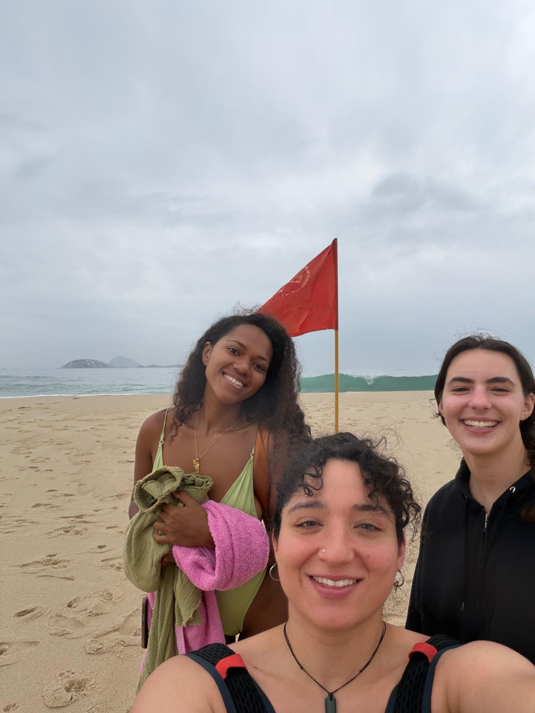
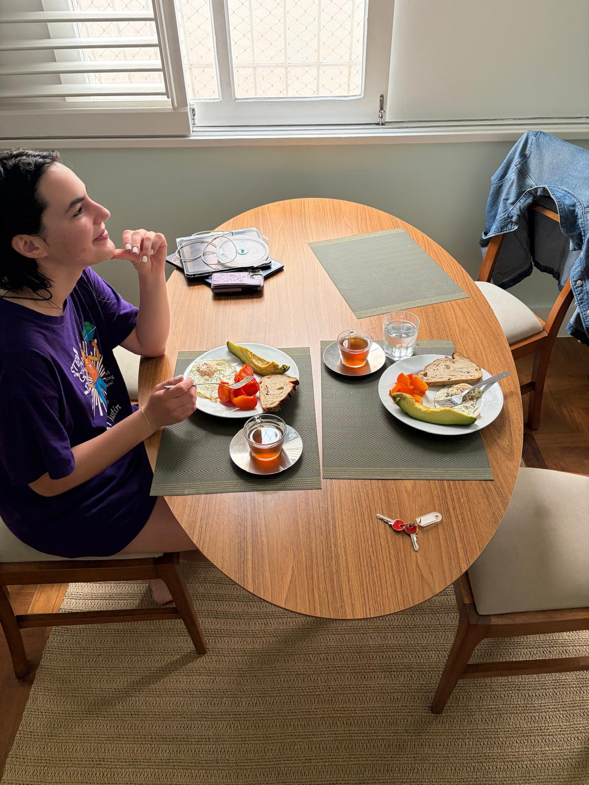
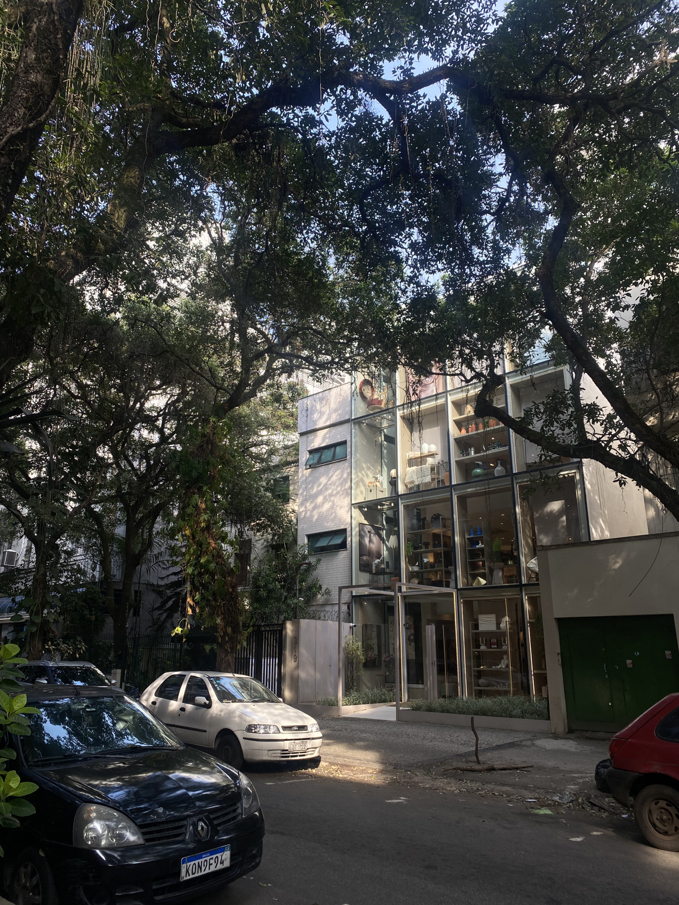
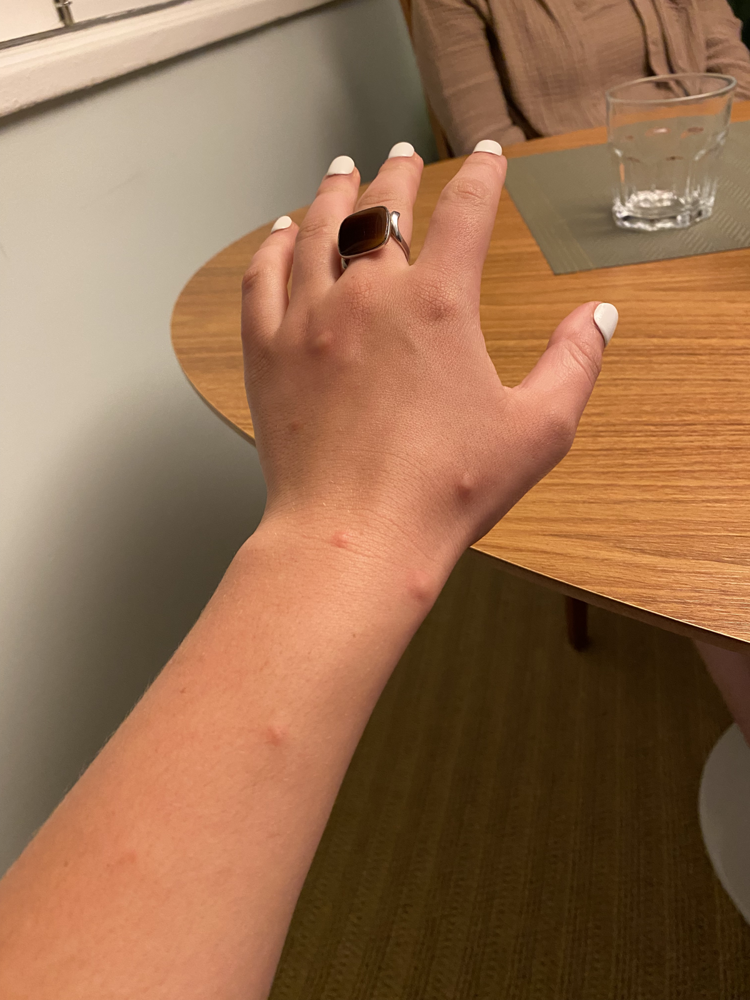
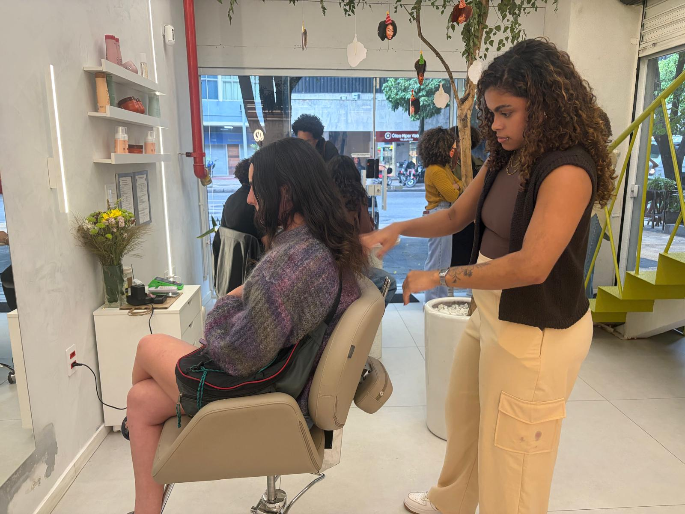
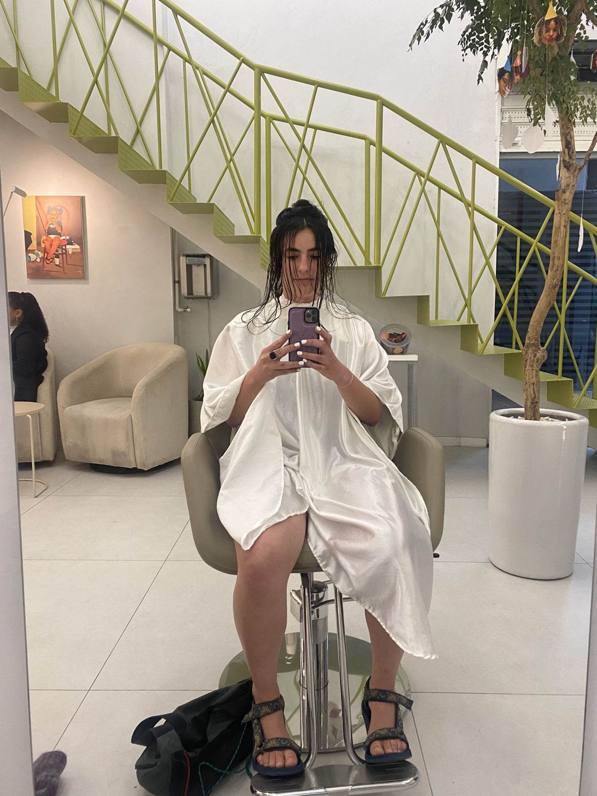
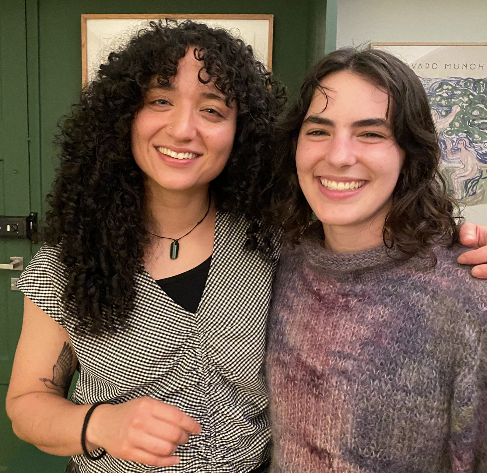
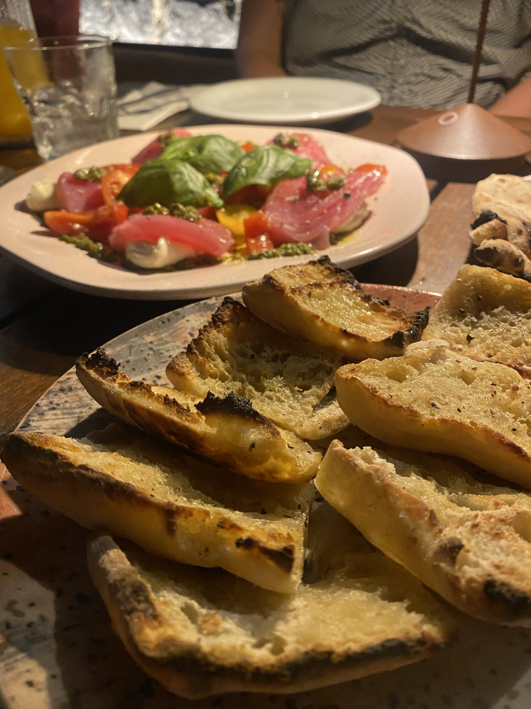
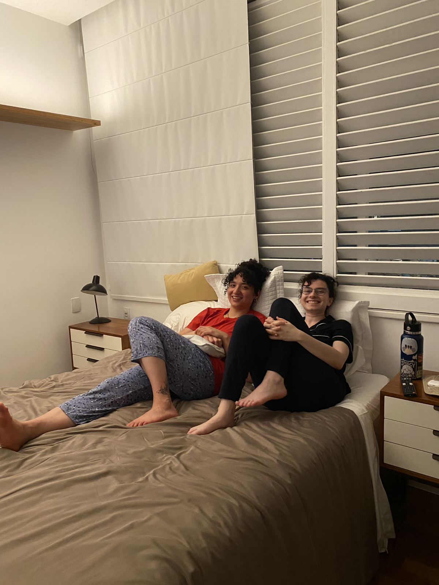

Hey y'all! Emily going solo again for a late night check in. That's how much I love the dedicated readers.
Karishma and I signed up for a week of early morning surf lessons! Karishma has surfed before but it's my very first time. We've been accompanied by a girl named Naomi from Paris who is also a pretty solid surfer already!
I was feeling quite out of my depth but I decided to do my best!
The lessons were straight to the point, no BS. They told us to lay on the board then quickly push up and get in surfing position. The instructor barked orders at us, but mostly just me.
Karishma and Naomi were perfect. After about 3 minutes of that, he sent us dragging our massive boards down to the water where another instructor was waiting for us, already in the ocean.
This instructor's name is Clecho (or at least that's what I heard) and seems to be between 20 and 25 years old. He is very quiet and speaks very little English or Spanish.
We communciate through gestures and attempts in a mix of Portuguese, English and Spanish. Clecho also seems to be in love with Naomi (or at least his friends were clearly making fun of him for it)... but who could blame him?
As soon as we reached Clecho he immediately started sending us one at a time to catch waves. He would tell us when to paddle and when to stand up so that we could get the timing right.
I actually did quite well for my first time and caught maybe half of the waves he sent me on. Karishma was predictably amazing.
There were a handful of guys out with waterproof cameras taking pictures of us surfing which we can then buy off of them.
We didn't buy any yet but we have many more surf lessons to go so stay tuned.
Maybe the hardest part of the whole thing for me was getting back out once I had ridden a wave in. For the longest time I didn't understand the rhythm of it-- wait for the big waves to pass then paddle out.
I was just getting clobbered over and over again. A nice man was trying to explain what to do in Portuguese when I got bowled over by the biggest wave yet, dragging me under for at least 5 seconds as I struggled to figure out which way was up.
By the time I surfaced, he re-explained in English but by then my dignity was gone.
I woke up this morning with a fever, headache and sore throat and told Karish I really didn't want to go surfing. I eventually rallied, tempted by multiple Advils and some avocado toast.
But when I finally dragged my feverish ass to the beach we were confronted by giant waves, way bigger than what we had our first day. I was getting a little nervous but vowed to do my best again-- after all it worked out yesterday, right?
We completed our beach drills, practicing standing on the board. After dragging our boards to the shore, we stood with our instructor surveying the waves.
"Can you swim?" he asked, which... didn't inspire confidence. After about 5 minutes scanning the ocean our instructor informed us that the waves were too big with a strong current towards the rocks that would be dangerous and we should come back another day.
As I had nearly chickened out already, I didn't have to be told twice.
Karishma, Naomi and I decided to go swimming so as to make the best of our morning. As we walked down the beach, we noticed that pretty much no one was in the water.
Eventually we noticed the conspicuous red flags warning with "alto risco" printed on them, thus dashing our hopes.

Getting absolutely mogged by Naomi here but I can't even be mad.
We did manage to see some cool skim boarding, though!

Enjoying some avocado and persimmons after surfing. I had long thought I hated persimmons as I had one in Austin that attacked my mouth and was deeply unpleasant.
I'm really glad I've tried a good one now so that I can stop smearing their good name everywhere I go.
After surfing, I went off in search of brigadeiros (Brazilian chocolate truffles) and groceries. In my feverish state (and trying to limit the number of times I pulled out my phone), I got totally turned around and probably wandered for an hour and a half.
It was totally worth it though, because I really got a sense for Ipanema, our new neighborhood.

It's really hard to capture the feeling of Rio-- sunlight filtering through the lush jungle canopy onto the cobblestone streets doesn't photograph like I wish it would.
But I tried. I've really never seen a city built into the rainforest like this one is.

An unfortunate side effect of the rainforest is absolutely gnarly mosquitoes. These have got to be the most powerful mosquito bites I've ever had.
A few days ago, Karishma and I decided to get haircuts while here in Brazil. Karishma was motivated to do it because there are many people with her hair texture here in Brazil, meaning that stylists would be used to cutting that type of hair.
I wanted to do it because I needed a haircut like... really bad. We were looking forward to the challenge of trying to explain what we wanted in Portuguese and then letting go of all control!

We immediately felt like we were in good hands-- all the hairdressers had beautiful curly hair. I kind of felt like asking them to cut my thin, wavy hair was like asking a Michelin starred chef to make a grilled cheese.
But as Karishma said, it sure was a good grilled cheese.
This was definitely the best haircut I've ever gotten and probably the cheapest, too. There was extra staff on hand to do the washing and drying of the hair so the hairdressers just focused on cutting.
I had spent the Uber ride over preparing to ask for what I wanted in Portuguese ("bangs like this but a little shorter and long layers"), which seemed to convince my stylist that I spoke Portuguese.
She talked to me for about 5 minutes about her plans for my hair until she asked me a question and it became clear that I had no idea what she was talking about.
After that, we communicated through Google translate. I wrote "you can cut all the dead ends off it's ok!" and she said "yay!". She was so nice and excited to do my hair-- she gave me two hugs when it was done.
They also took dramatic before and after photos and videos with big lights.


Results! I had to wash my hair again after getting home because they put wayyyy too much product in for my thin hair and then diffused it to massive volume.
But I really like how it turned out now that it's air dried to its natural texture.
Despite how this interaction may seem, my Portuguese has actually been getting a lot better! I understood an entire interaction at the bank wherein someone asked us if we were looking for somewhere to do international transactions and then described where to go.
I understood enough of the directions to locate the bank and take out money! I was quite proud.

We went to a delicious pizza place for dinner which had been recommended by Lena's coworker, Natalia, and João's friend Victor, our local contacts.
Victor especially has been helping us a lot, especially with our weekend plans!

We had originally considered going out to samba but decided to curl up together and watch the first episode of Jury Duty, Season 2 like the old ladies we are.
Distance walked across the past two days: 8.3 miles
New Portuguese words:
e tudo = that's all
como se chama = what is the name or how do you say
até amanhã = see you tomorrow
Até logo,
Emily "that's not a winning strategy for bro" Bregou
Lena "very bike jersey-forward" Armstrong
Karishma "you look like a cult leader! I would look like... an aquarium" Lachhwani